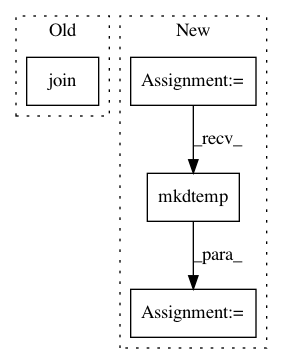

99c94d88c96c2b0a45bbbef4c8a126fa018ce513,bootstrap/build.py,,main,#,11
Before Change
for reg in conf["registries"]:
if test_reg_name == reg["name"]:
src_registry = os.path.join(test_reg_path, reg["path"])
reg_path = os.path.join(tmp_dir, *os.path.join(reg["name"], reg["path"]).split("/")[:-1])
if not os.path.exists(reg_path):
os.makedirs(reg_path)
print("cp -r %s %s" % (src_registry, reg_path))
After Change
shutil.rmtree(tmp_dir)
os.mkdir(tmp_dir)
os_tmp_dir = tempfile.mkdtemp()
print("Using tmp dir: " + os_tmp_dir)
with open(os.path.join(FILE_PATH, args.config), "r") as conf_input:
conf = yaml.load(conf_input)
In pattern: SUPERPATTERN
Frequency: 3
Non-data size: 4
Instances
Project Name: kubeflow/kubeflow
Commit Name: 99c94d88c96c2b0a45bbbef4c8a126fa018ce513
Time: 2018-10-11
Author: 37601826+kunmingg@users.noreply.github.com
File Name: bootstrap/build.py
Class Name:
Method Name: main
Project Name: nilmtk/nilmtk
Commit Name: bf2f9ed95b2e6e821d72f37e33d8326063672975
Time: 2018-09-09
Author: 10246101+PMeira@users.noreply.github.com
File Name: nilmtk/dataset_converters/hes/convert_hes.py
Class Name:
Method Name: convert_hes
Project Name: cesium-ml/cesium
Commit Name: 9e227261c7177192587629890ca3014cd3a94e28
Time: 2015-04-30
Author: a.crellinquick@gmail.com
File Name: mltsp/parallel_processing.py
Class Name:
Method Name: featurize_in_parallel